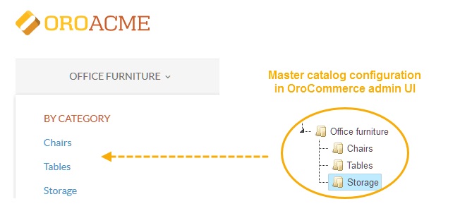

Overview¶
Master catalog
Master catalog is a tree structure that organises all products you are selling. A category may group the products of the same type or may enforce the unified selling strategy, special visibility and SEO settings, inventory management strategy, and the default product options (units and the value precision) that best fit the resulting product family.
Watch this short video to see how to set up a basic category structure:
Once the categories are in place, you can:
- Add category description and visuals
- Manage category visibility
- Configure SEO options
WORK IN PROGRESS
Personalized product catalogues with variable pricing
Personalization should begin even before a customer places their first order. For instance, information about a visitor’s geographic location can easily be gleaned from their IP address, or their interests from the advertisement they clicked on to arrive at your site. Even more information can be gathered by inviting visitors to set up an account or fill out a short form. This data can then be used to tailor what type of products they see displayed. These practices, common on consumer-facing sites, are especially important for online B2B stores, since many of their potential customers are liable to come, via Internet research, advertising, or word of mouth, from anywhere in the world. The convenience of personalized catalogues will not mean much if customers do not also receive discounts based on order size and history. This is an important aspect of B2B business and it cannot be overlooked on your online store. It should be capable of offering variable prices according to multiple criteria, including volume, rate of purchase, and individual contracts. The best e-commerce platforms will be able to automatically calculate these factors for each customer. For example, based on their order history, two different customers might see the same product displayed. However, the customer who regularly places large orders could receive a discount over the one who places smaller orders.